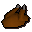
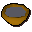

Bowl of water
| Config name | bowl_water |
| Item id | 1921 |
| Value | 4 gp |
| Weight | 2lb |
| Members | No |
| Tradeable | Yes |
| Stackable | No |
| Defined in | scripts/general_use/configs/water_sources.obj |
Bowl of water
It's a bowl of water.
Show 1 ground spawn on the world map → Open in knowledge graph →
Used to make
| Skill | Level | XP | Ingredients | Tool | How | Where | Makes |
|---|---|---|---|---|---|---|---|
| Cooking | 1 | chat menu Bread dough. / Pastry dough. / Pizza dough. / Pitta dough. | gives back | ||||
| Cooking | 1 | chat menu Bread dough. / Pastry dough. / Pizza dough. / Pitta dough. | gives back | ||||
| Cooking | 1 | chat menu Bread dough. / Pastry dough. / Pizza dough. / Pitta dough. | gives back | ||||
| Cooking | 1 | chat menu Bread dough. / Pastry dough. / Pizza dough. / Pitta dough. | gives back | ||||
| Cooking | 25 | use on item | |||||
| Cooking | 25 |  Cooked chicken | use on item |  Incomplete stew | |||
| Cooking | 25 | use on item | Incomplete stew | ||||
| Crafting | 1 | use on item | water: any of bowl_water, bucket_water, jug_water |
Sold at
| Shop | Shopkeeper | Stock |
|---|---|---|
| Bedabin Village Bartering | 5 | |
| Shantay Pass Shop | 10 |
Ground spawns
| Area | Coordinates | Level | Count | Map |
|---|---|---|---|---|
| Desert Mining Camp | 3291, 3034 | 0 | 1 | view |
Quests
Referenced in scripts
scripts/areas/area_desert/scripts/desert_heat.rs2scripts/general_use/scripts/water_sources.rs2scripts/quests/quest_legends/scripts/legends_boulder.rs2scripts/quests/quest_legends/scripts/quest_legends.rs2scripts/skill_cooking/scripts/cooking_inv/scripts/meat/cooked_meat.rs2scripts/skill_cooking/scripts/cooking_inv/scripts/stew/stew.rs2scripts/skill_crafting/scripts/pottery/pottery.rs2